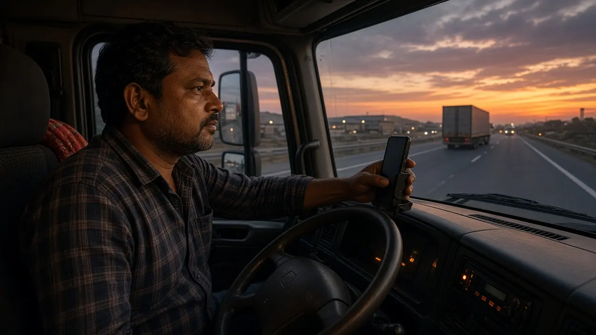

Channels
Free public rooms and authenticated organisation channels. Everyone on the same link hears the same floor.
Open Sanket RadiosPush-to-talk · Vadodara
Sanket is a channel radio in the browser. Hold to talk, release to listen. Cloud lines, a radio you can share with one link, and live transcription when you need the words.
Shared demonstration channel on Virtual. It connects on its own. Do not send private or operational information.
On the radio
Free public rooms and authenticated organisation channels. Everyone on the same link hears the same floor.
Open Sanket RadiosPTT 2 can share coordinates with the channel while Share is on. Untick it to stop.
Open PTT 2Transcribe watches for words already in the client list, including mayday, sos, emergency and चेतावनी. It is a keyword flag, not a separate panic button.
Open TranscribeLive speech-to-text through Sanket Transcribe, with local Whisper where that client already falls back.
Listen in textGujarati, Hindi and English in the Transcribe client.
Open TranscribeSanket आकाशवाणी is the control room for speaker outputs. ₹35,000 one-time.
Open the control roomUse cases



Pricing
Cloud is ₹450 per line per month, with the latest hour of recordings kept. Volume discounts and the hardware plans are on the pricing page.
Applications
SDR-based surveillance for authorised military and defence use.
Request a meetingA learning agent that runs beside a leading model, compares outputs, and learns where the local model fell short.
Ask for pricePTT 2, Smart Radio, Sanket Radios, Transcribe, आकाशवाणी, DMR, and Boondock.
ApplicationsContact
Canberra Vision AI Systems. Sanket is designed for teams that need dependable communication, clear records and practical speech intelligence.
713 Samanvay Silver, Akota, Vadodara, Gujarat, India
Email
akshatsingh@canberravision.com
akshat@sanketptt.com
Phone
+91 99982 99023
Production channel access requires authentication. The embedded homepage demo is a shared public demonstration channel only.